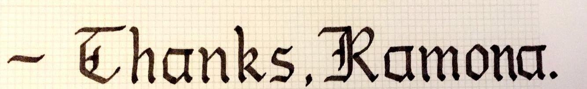

My Calligraphy Journey
An artform in which a brush or pen is used to decoratively write an otherwise normally written word.
What is it?
When do I start to consider something as calligraphy? Is it when special writing utensils are used? What about when fancy drawings are added? Or is it simply when a word is written in cursive? To me, regular writing becomes calligraphy when it's evident that there was intent to make the words look decorative, or simply more stylized.
How did I start?
It all started with instagram. Or maybe I should start further back when I became obsessed with my handwriting. I was always told that my handwriting was pretty neat, so I used extra time to refine my pencil strokes. Middleschooler me had nothing to keep her busy.

This is where instagram plays its part. I'd always like looking at images of other people's neat handwriting. Eventually, I'd find some posts on brush or gothic calligraphy. It was like nothing I'd ever seen before and the lines looked so complex. I noticed right away that you couldn't really do gothic calligraphy or brush calligraphy with a normal ball pen or pencil. Luckily, at a Secret Santa party, someone gifted me a calligraphy pen set!
It's still interesting to me how one of my biggest hobbies started with a surprising gift.
Next